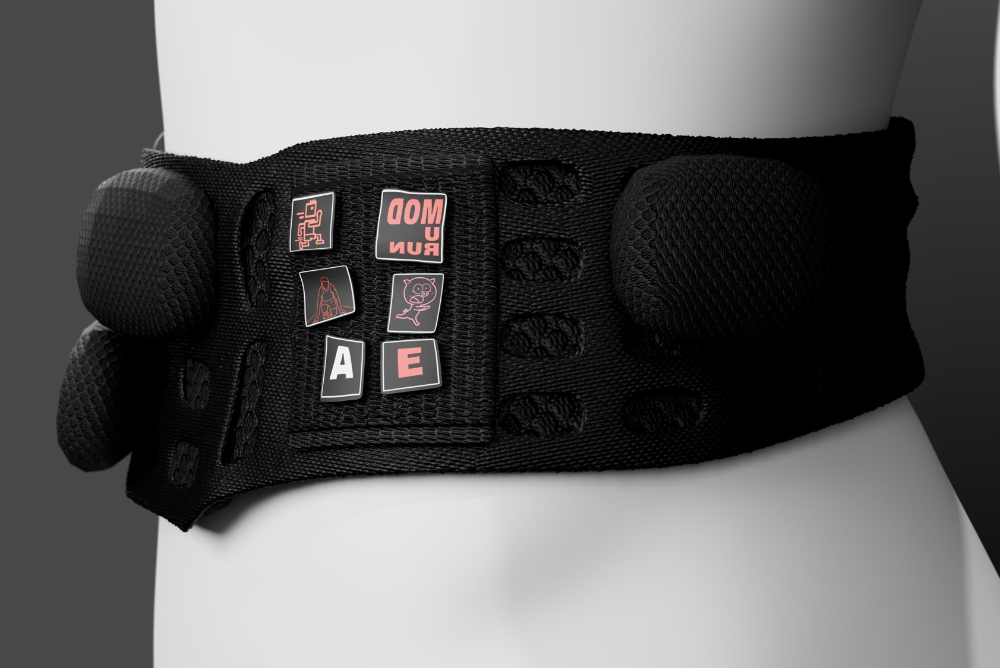

“I am really impressed”: feedback on ModuRun

ModuRun began as an awkward brief: a running belt that does not bounce, ride up or fit badly. I surveyed runners, studied the belts already on the market and spent a long time on how water bottles move as you run. The result is a slim belt that follows the hip, with modules that attach wherever a runner needs them.
Giles Ellis reviewed the project. On the research:
You did an excellent amount of research. Especially the physics of [water] bottles.
Giles Ellis
On the design and renders:
Your design and the renders are extreme[ly] good for such an awkward brief. I am really impressed.
Giles Ellis
The brief also threw in a curveball partway through, which I worked into the design. Giles said I "thought hard on it and came out with a solid mod".